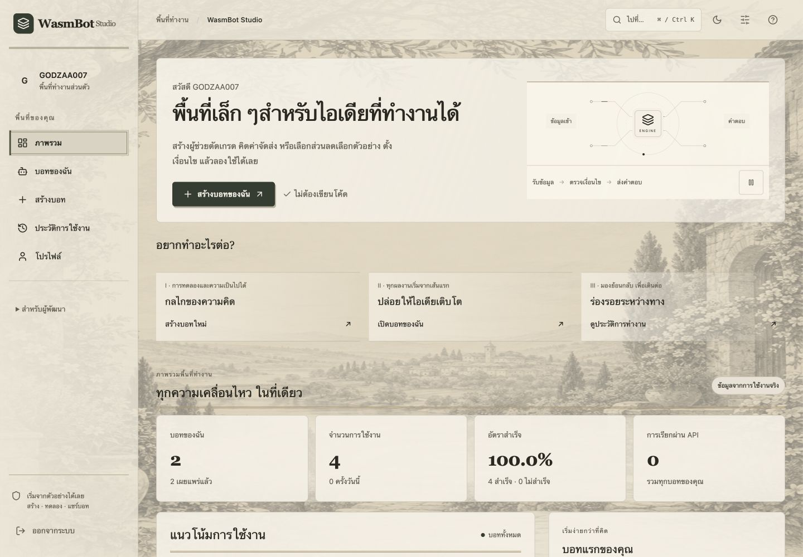

Deployed
01
Full stack · No-code platform
WasmBot Studio
A no-code platform that turns business rules into reusable bots, from a visual editor to versioned deployment and API access.
My role Full-stack development
- Design Visual rule builder
- Test Rust WASM runtime
- Publish Immutable version
- Use Form · Embed · API · SDK
- Built a nested AND/OR rule editor supporting 12 operators.
- Implemented immutable deployment snapshots so draft edits never affect the live version.
- Secured access with PostgreSQL row-level security, scoped API keys hashed with HMAC-SHA256, and rate limits.
- Integrated a Rust WebAssembly engine with 7 Edge Functions and tested deployed workflows.
The application requires sign-in; the screenshot and source code are available to view directly.